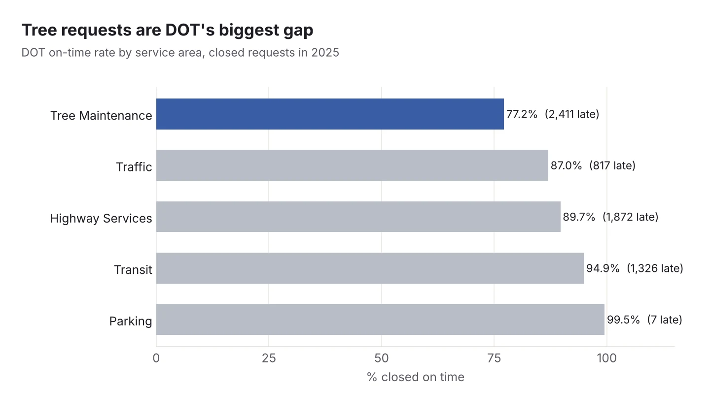

Montgomery County 311 on-time analysis
MySQL, Power BI, DAX
Every 311 request in my home county comes with a promise: a deadline to resolve it. I loaded all 531,108 requests from 2025 into MySQL, cleaned them, and checked how often that promise is kept. The county is on time 97.7% of the time, but the Department of Transportation alone caused over half of all late requests, and tree requests were the worst, missing about one in four deadlines.
The hard part: 53% of requests had no location. Before comparing council districts, I checked whether those rows were different, and they were (99.0% on time vs. 96.1%), so I compared districts using only requests with a location.
Why it matters: the county could add tree crews from April through July, before the backlog builds, and start in the districts where residents wait longest.

